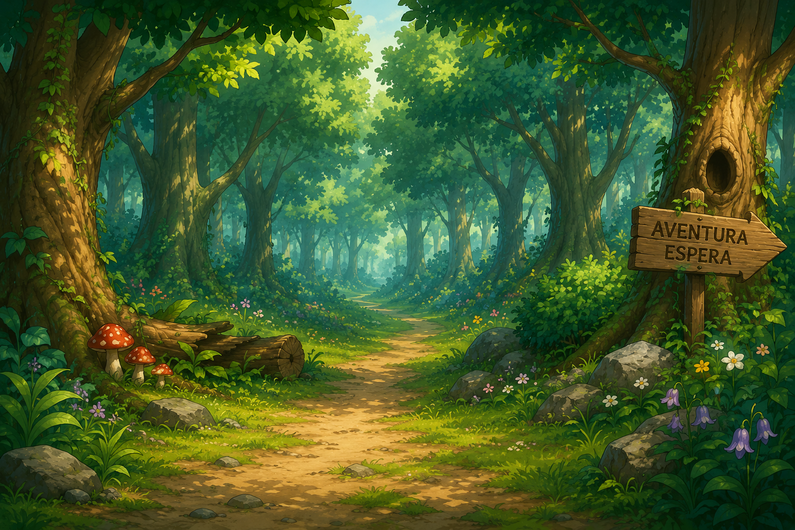
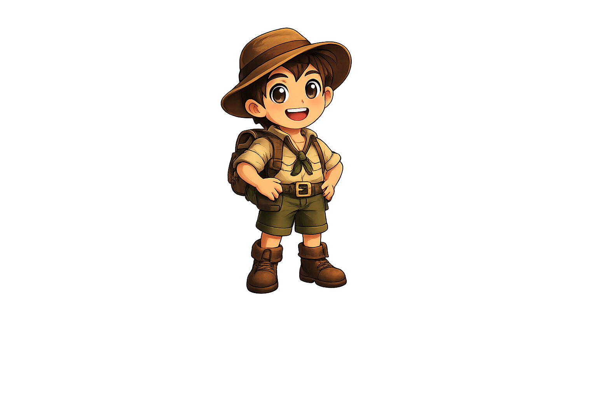

GA Games
Aventura de Palabras
Explorá mundos resolviendo palabras


¡Comienza la expedición!
Aventura de Palabras
LA LEYENDA DE LOS CINCO CRISTALES
Hace muchos años, cinco Cristales de la Sabiduría mantenían el equilibrio entre los mundos.
Pero una noche, una fuerza misteriosa hizo desaparecer los cristales. Sin su poder, los portales comenzaron a debilitarse y los mundos quedaron en peligro.
Un joven explorador encontró un antiguo mapa que señalaba la ubicación del primer cristal, oculto en lo profundo del Bosque Encantado.
Para recuperarlo deberá avanzar resolviendo palabras, superar los peligros del camino y descubrir quién robó los cristales.
Tu primera misión comienza en el Bosque Encantado.